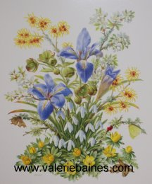

|
Past Events
|
16 October - 17 October 2014 |
FLOWER PAINTING COURSE

This studio based two-day course will help you to create a watercolour painting, with the aim of producing a detailed and lifelike image. It will be suitable for beginners or more experienced painters. Tuition will be on an individual basis, with friendly experienced advice to help solve problems as they arise. There will be a new approach to preparatory drawing, designed to increase confidence, improve composition and take away the "fear of the white page!"
The course includes coffee, tea, and a cooked lunch, costing £85 per person for the two days.
There are still a few places available, so book now to avoid disappointment.
To book, please contact Valerie by email.
Venue. Millbrook Garden Centre. Tubwell Lane, Crowborough, East Sussex. TN6 3RJ
|
|
5 June - 6 June 2014 |
SPRING FLOWER PAINTING COURSE
The Course. This studio based two-day course will help you to create a watercolour painting, with the aim of producing a detailed and lifelike image. It will be suitable for beginners or more experienced painters. Tuition will be on an individual basis, with friendly experienced advice to help solve problems as they arise. There will be a new approach to preparatory drawing, designed to increase confidence, improve composition and take away the "fear of the white page!"
The course includes coffee, tea, and a two-course café lunch, costing £85 per person for the two days.
Numbers are limited to twelve, so book early to avoid disappointment.
To book, please contact Valerie by email.
Venue. The Loft. Millbrook Garden Centre. Tubwell Lane, Crowborough, East Sussex. TN6 3RJ Tel: 01892 663822.
|
|
12 September - 13 September 2013 |
ARTIST IN RESIDENCE WADHURST LIBRARY
|
|
4 September - 5 September 2013 |
Flower Painting Course
COURSE CONTENT. This studio based two-day course will help you to create a watercolour painting, with the aim of producing a detailed and lifelike image. It will be suitable for beginners or more experienced painters. Tuition will be on an individual basis, with friendly experienced advice to help solve problems as they arise. There will be a new approach to preparatory drawing, designed to increase confidence, improve composition and take away the "fear of the white page!"
VENUE. The Loft. Millbrook Garden Centre. Tubwell Lane, Crowborough, East Sussex. TN6 3RJ Tel: 01892 663822.
The course includes coffee, tea and a two-course cafe lunch each day, costing £85 for the two days. Numbers are limited to twelve, so book early to avoid disappointment.
|
|
15 June - 16 June 2013 |
Exhibition of Botanical Flower Paintings at "the Forge"
St James' Square, High Street, Wadhurst (next to the Methodist Church) during the Wadhurst "Open Gardens" week-end
|
|
14 May - 15 May 2013 |
Flower Painting Course
Sussex Country Gardener, Beechglade Farm, Mark Cross (A267), Crowborough, East Sussex. TN6 3PJ
This is a studio based course, including coffee, a cafe lunch and tea each day.
Cost per person £85. Numbers limited to 12, so book early to avoid disappointment.
COURSE CONTENT. This is a studio based two day course to practice watercolour painting, with the aim of producing a detailed and lifelike image. It will be suitable for beginners or more experienced painters. Tuition will be on an individual basis, with friendly experienced advice to help solve problems as they arise. There will be a new approach to preparatory drawing, designed to increase confidence, improve composition and take away the "fear of the white page!"
THE COURSE TUTOR. Valerie Baines trained at Harrow Art School, and later became a designer for Sandersons, where she worked in the studio for five years.
She is a Founder member and past Vice-President of the Society of Botanical Artists, and a Fellow of the Linnean Society of London. Among many venues, her paintings have been exhibited in London at the Royal Academy, The Museum of Garden History, and the Royal Horticultural Society, the Carnegie Mellon University, U.S.A. the Memorial University Botanical Gardens, Canada, and Yvoire, France. She has illustrated several books on Natural History, including "The Naturalist's Garden", "Botanical Diary", "Meadows", "Glorious Butterflies", and "Mindful of Butterflies", and has contributed to "The Art of Botanical Painting" and "The Botanical Palette". Her paintings are in collections in Britain, France, America, Canada, South Africa and Europe.
SUGGESTED MATERIALS FOR THE COURSE. The items below are useful but not obligatory, please feel free to bring any other materials that you are used to, or wish to try out.
An A3 size pad of watercolour paper, (weight 140 lb) Hot pressed (smooth surface) or NOT (slightly textured surface) An A4 pad of tracing paper.
A propelling pencil or HB pencil, sharpener and putty rubber.
Watercolour Paints. Artist's colours are well worth the extra cost as they are better quality, and more translucent and long lasting.
Suggested Colours. Winsor and Newton - Payne's Grey, Winsor Lemon, Permanent Rose and Winsor Violet are all useful for flower painting; also Scarlet Lake, Cobalt Blue, Yellow Ochre and Burnt Sienna.
Brushes. No's 00, 3 and 5 would be a good range. An old brush for mixing colours would be useful. W & N Cotman or Prolene are good. Dalon and Sceptre are synthetic and take a lot of wear.
A tube of Copydex would be useful.
Sussex Country Gardener, Beechglade Farm, Mark Cross (A267), Crowborough, East Sussex. TN6 3PJ
Tel 01892 852828. Fax 01892 853231. Email enquiries@sussexcountrygardener.co.uk
|
|
9 August - 10 August 2012 |
Flower Painting Course
Sussex Country Gardener, Beechglade Farm, Mark Cross (A267), Crowborough, East Sussex. TN6 3PJ
This is a studio based course, including coffee, a cafe lunch and tea each day.
Cost per person £85. Numbers limited to 12, so book early to avoid disappointment.
Tel 01892 852828. Fax 01892 853231. Email enquiries@sussexcountrygardener.co.uk
|
|
15 May - 16 May 2012 |
Flower Painting Course
Sussex Country Gardener, Beechglade Farm, Mark Cross (A267), Crowborough, East Sussex. TN6 3PJ
This is a studio based course, including coffee, a cafe lunch and tea each day.
Cost per person £85. Numbers limited to 12, so book early to avoid disappointment.
Tel 01892 852828. Fax 01892 853231. Email enquiries@sussexcountrygardener.co.uk
|
|
20 April - 29 April 2012 |
Society of Botanical Artists "Botanical Celebration"
Annual exhibition, including paintings by Valerie. These prints will be available for sale and the originals are in the exhibition.
Westminster Central Hall, Storey's Gate, London, SW1H 9NH
Society of Botanical Artists
 | |  |
| Summer Berries | | Winter Harvest |
|
|
November 2011 |
"A study of life" article in Sussex Life magazine
Artist Valerie Baines takes inspiration from her Sussex garden and surrounding landscape for her exquisite painting. Leigh Clapp went to meet her.
Sussex Life, November 2011.
Available from Sussex newsagents, or can be ordered online here.
|
|
3 April 2012 |
A talk on "Gardening for Butterflies"
Sussex Country Gardener, Beechglade Farm, Mark Cross (A267), Crowborough, East Sussex. TN6 3PJ
|
|
8 April - 17 April 2011 |
Society of Botanical Artists "THE WORLD OF PLANTS"
800 flower paintings in many different mediums and styles. All work for sale. Cafe.
Westminster Central Hall, Storey's Gate, London, SW1H 9NH
Society of Botanical Artists
|
|
7 October - 8 October 2010 |
Flower Painting course at Pashley Manor
This 2 day course will help you to create a water-colour painting or study of seasonal plants from the beautiful garden at Pashley Manor. Suitable for beginners or the more experienced, with sympathetic individual tuition, and demonstating a technique to take away the "fear of the white page". Participants will be requested to bring their own materials.
The course will take place in the spacious surroundings of the Garden Room with a delicious buffet lunch and refreshments each day, it should be an occasion to enjoy.
For more details or to book a place call 01580 200888 or email info@pashleymanorgardens.com
www.pashleymanorgardens.com
|
|
24 July - 25 July 2010 |
Surrey Butterfly Garden Show, Juniper Hall Field Centre, Mickleham, Nr Dorking
Butterfly garden, free guided butterfly walks, tropical butterfly display, microscopes for detail observation, activities & fun for children, face painting, sales stalls with books, prints and photos, nectar and food plants for sale, other wildlife conservation groups.
|
|
7 July - 8 July 2010 |
Flower Painting Course at Sussex Country Gardener
Flower Painting Course tutored by Valerie Baines, F.L.S. F.S.B.A. Botanical and Natural History Illustrator, at the Sussex Country Gardener Garden Centre, Beechglade Farm, Mark Cross Crowborough, East Sussex TN5 7PT
Including coffee, sandwich lunch, tea and cakes. £80 per person for the two days. Fully Booked
Up to ten participants only. Please bring your own painting materials.
This two-day course will help you to create a water-colour flower painting, with a new preparatory approach to increase confidence and lessen the "fear of the white page." Suitable for beginners or more experienced painters. Tuition will be on a mainly individual basis, with friendly experienced advice to help you solve problems as they arise.
|
|
26 May - 27 May 2010 |
Flower Painting Course at Sussex Country Gardener
Flower Painting Course tutored by Valerie Baines, F.L.S. F.S.B.A. Botanical and Natural History Illustrator, at the Sussex Country Gardener Garden Centre, Beechglade Farm, Mark Cross Crowborough, East Sussex TN5 7PT
Including coffee, sandwich lunch, tea and cakes. £80 per person for the two days. Fully Booked
Up to ten participants only. Please bring your own painting materials.
This two-day course will help you to create a water-colour flower painting, with a new preparatory approach to increase confidence and lessen the "fear of the white page." Suitable for beginners or more experienced painters. Tuition will be on a mainly individual basis, with friendly experienced advice to help you solve problems as they arise.
|
|
16 Apr - 25 Apr 2010 |
Society of Botanical Artists "Silver Jubilee Exhibition"
800 flower paintings in many different mediums and styles. All work for sale. Cafe available. Westminster Central Hall.
Society of Botanical Artists
|
|
18 Jan - 8 Apr 2010 |
Field House Art Gallery, by request extended until April 8
Field House Art Gallery, High Street Wadhurst TN5 6AQ
Solo exhibition of watercolour and oil paintings. Landscapes, flowers, butterflies, birds and animals.
Field House Art Gallery
|
|
1 Oct - 2 Oct 2009 |
"Flower Painting Course"
Pashley Manor, Ticehurst, East Sussex. TN5 7HE
This two day course will help you create a water-colour painting or study of seasonal plants from the beautiful garden at Pashley Manor. Suitable for beginners or the more experienced, with sympathetic and individual tuition, and demonstrating a new technique to take away the "fear of the white page". Participants will be requested to bring their own materials.
http://www.pashleymanorgardens.com
|
|
12 Sep - 19 Sep 2009 |
"Florum"
Sevenoaks Wildlife Reserve, Bradbourne Vale Road, Sevenoaks, Kent TN13 3DH
An exhibition of floral, botanical and landscape paintings. |
|
6 Aug 2009 |
Valerie is giving a talk on "Gardening for Butterflies" with illustrations.
The "Sussex Country Gardener" Garden Centre, Beechglade Farm, Mark Cross (A262) near Crowborough, East Sussex. TN6 3PJ
Website: www.sussexcountrygardener.co.uk
|
|
24 Apr - 3 May 2009 |
"Flowers and Gardens", The annual exhibition of the Society of Botanical Artists.
Westminster Central Hall, London
Valerie has four paintings in this exhibition as well as prints and greetings cards.
Queen of the Night. Camellia "Donation". Stachis lanata. Autumn leaves.
|
|
2 Oct - 3 Oct 2008 |
"Flower Painting Course"
Pashley Manor, Ticehurst, East Sussex. TN5 7HE
A two-day studio-based course on flower painting in water-colour, with coffee, lunch and tea.
http://www.pashleymanorgardens.com
|
|
6 Sept - 13 Sept 2008 |
"Florum"
Sevenoaks Wildlife Reserve, Bradbourne Vale Road, Sevenoaks, Kent TN13 3DH
An exhibition of floral, botanical and landscape paintings. |
|
11 Sept 2008 |
"Gardening for Butterflies"
"Sussex Country Gardener", Mark Cross, Crowborough, East Sussex. TN6 3PJ
Valerie will be giving a talk at 2.30pm.
|
|
23 May - 26 May 2008 |
"The Art of Flower Painting"
Juniper Hall Field Centre, Dorking, Surrey RH5 6DA
A residential studio-based course to practice water-colour painting, which will pay close attention to tonal values, colour, texture, and form in flowers and fruit, with the aim of producing a detailed and life-like image. There will be a new approach to preparatory drawing, designed to increase confidence and improve composition.
|
| 18 April - 27 April 2008 |
The Society of Botanical Artists.
Central Hall, Westminster, London SW1.
http://www.soc-botanical-artists.org
Columbine |
 | 
February |
|
|
21 February 2008 |
Lunchtime Conversations - Gorillas to Butterflies
Shelley's Hotel, Lewes, East Sussex. 01273 472361. Advance booking required.
A light but informative talk. Some of the subjects covered will be Natural History, Botanical and Miniature
painting, landscapes, portraits, book illustration and butterfly gardening. If anyone wants any tips, or has
questions about water-colour painting or drawing I will be happy to answer them.
'Lunchtime Conversations' are designed for all; it is for those who believe that learning and conversing transcends any
other scenario. Lunch comprises two courses, with a vegetarian option provided, a glass of wine or juice, and coffee
costs just £16. We assemble at 12:45.
|
|
4 October - 5 October 2007 |
Two - day Flower Painting Course. Pashley Manor, Ticehurst, E. Sussex. |
| 1 April - 30 September 2007 |
The Magic of Ashdown Forest. Ashdown Forest Centre, Wych Cross, Forest Row, Sussex. |
| 8 September - 15 September 2007 |
"Florum" Exhibition of flower, botanical and landscape paintings by 60 artists. Sevenoaks Wildlife Reserve, Bradbourn Vale Road, Sevenoaks. Kent. |
©2008, ©2009, ©2010, ©2011 Valerie Baines |

|